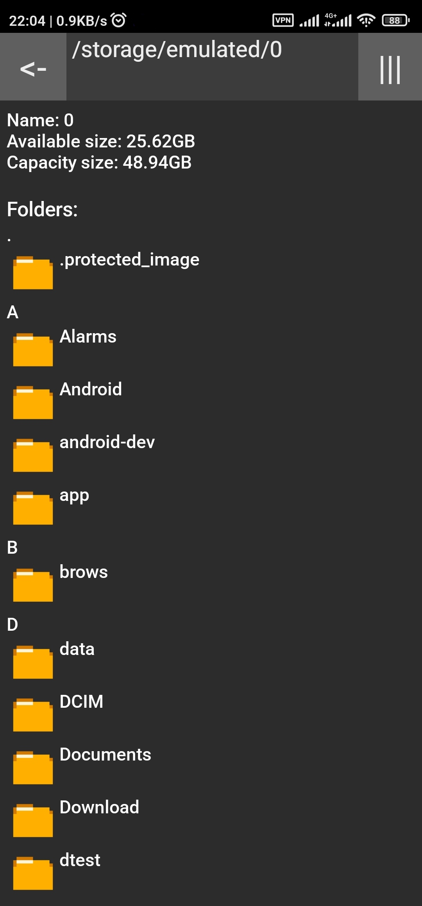

A simple file explorer, designed with compatibility in mind.
It provides multiple functions, including copy and pasting files, multi-file share, etc. More information available in Features section below.
Supports Android 1.0+
Open-sourced and publicly-viewable code for anyone worrying about being locked in or privacy invasion.
Previous known as Simple File Explorer (but from martinmimigames).
Important features:
- Free
- Small (< 40 KB)
- Basic file operations (Cut, copy, paste, rename, delete)
- File name filter
- Name and Modified Time sort
- Easy switch between sdcard and internal storage
- Multi-share function
- File/folder path copying
- Minimum permissions
- Dark/light theme toggle
- md5 checksum generation and verification
Source code available on Github.

Newest version: v4.16 (Updated on 2025-04-09)
Update Log:
v4.16:
- fix read / write grant issues on file:// uri
- lower android version to 4.4 for giving out content:// uri
- revert back button to ascii code for consistency
- switch to sparse array to reduce memory usage
v4.15:
- Fixed copying pasting not working properly in some cases
- Fixed having grey area in cursors on some text inputs
- Shrunk size
- Reworded notification
v4.14:
- Fixed filter bug causing crash on startup
- Fixed file not opening on some apps (missing metadata)
- Fixed file size calculation incorrect
- Now clear text input when create new folder
- More natural-looking back button
- Removed unused notification about invalid folder name
- Now uses Future for concurrency management (less race condition)
v4.13:
- Fixed # in file name error
- Added follow system dark mode
- Fixed crash when open details of large files
- Fixed error when empty clipboard
- Now clear filter when entering/exiting folder
- Added invalid name warning when creating/renaming files
v4.12:
- added md5 checksum calculation and verification (details page)
- theme is now toggle-based (burger menu)
- app now forget last path (feature reverted)
v4.11:
- Fix crashing if last exited on a non-existing folder
- Fix unable to exit folders with access denied
- Added details page for files
- Added light mode (follows system settings)
- Added sorting by file size
- Moved storage info to the bottom
- Added slight padding to dialogs
v4.10:
- Added "toggle hidden" option (available in menu button)
- Added File/Folder name filtering (available on top bar)
- Added display sorting (name, last modified time) (available in menu button)
- Added file path remembering on app exit
- Re-added share button in open list options
- Fixed delete confirmation screen being full screen
v4.9:
- Fixed sticky selection state after leaving app
- Fixed concurrent directory list modification
- Removed share button from file option menu
- Added duplicate folder warning when creating new folder
- Changed rounding system for storage size display
- Always update storage list quick switch display
- Now use cache thread pool for reducing idle cpu usage and increase performance
v4.8:
- Allow folder path to be copied to clipboard
- Fixed incorrect handling after path copying
- Fixed delete conformation button being pushed out by long list
- Fixed copying to incorrect directory when moved directory while in progress
v4.7:
- Added multi-share option (sdk 4+)
- Added file path copy option
- Allow open file with default apps
- Reduced open list button size
- Capitalised buttons
- Changed opener text
v4.6:
- Fixed not opening when no sdcard inserted
v4.5:
- smaller apk
- fixed quick selection overlap with menu list
- opening file request by other app now have open prompt
- changed audio png
- back button now go back to parent folder if available
You can download from the following ways:


Get it from website (apk v4.16)
Sorry if the above methods doesn't suit you.